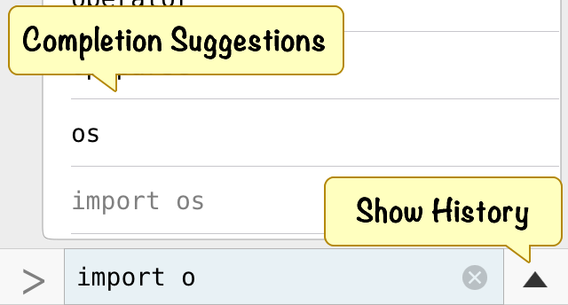
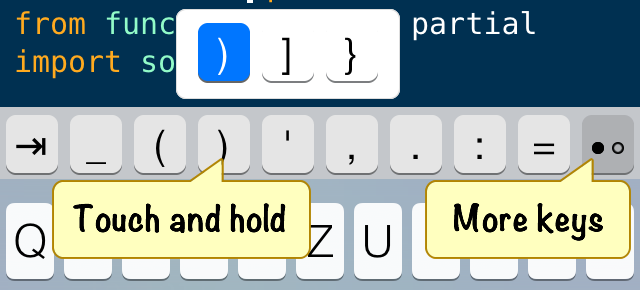

This page gives an overview of the Pythonista UI and also contains some useful tips and tricks to help you get the most out of it.
The Pythonista UI is divided into three panels: The script library, the code editor, and the interactive prompt. You can switch between these panels with left and right swipe gestures.
The script library shows all the scripts you’ve written and those that are included as examples. You can either view them as a list, or as code snippet previews. Tap the button in the lower-right corner to switch between the two viewing modes.
To create a new script, tap the  button. You can either start with a blank slate,
or a choose a template that makes it easier to work with the interactive graphics
capabilities of the scene module.
button. You can either start with a blank slate,
or a choose a template that makes it easier to work with the interactive graphics
capabilities of the scene module.
To delete scripts or create new folders, tap the Edit button. You can then select one or more scripts and use the buttons at the bottom to delete the selected files or to move them to a different folder.
The script library also shows non-Python files, e.g. data files that your scripts work with. For common file types (e.g. images, PDFs), a QuickLook preview is shown when you select them in the list.
The interactive prompt is the easiest way to get started with Python. Every time you enter a line of code, it is executed immediately, so you get quick feedback and can experiment with the syntax. Even if you know nothing about Python, you’ll be able to use the prompt as a powerful calculator.
You can get to the prompt at any time by swiping from the right edge of the screen. This area is also used for text output of any scripts that you run and for keyboard input (e.g. when you use the raw_input() function, see the included Random Numbers script for an example).
When you enter code, completions are suggested automatically. If you find this distracting, you can turn it off in the settings. To repeat a command you’ve used before, you can use the history popup.
The output area is also used to show images that you create with the PIL (Python Imaging Library). You can see this in the included “Image Effects” example.
If you’ve used any programming editor before, you’ll probably feel right at home in Pythonista. For the most part, the editor behaves very similar to any other text area on iOS, but there are some additional features that might not be obvious at first.
First off, the keyboard contains additional keys with special characters that are useful for programming. These additional keys also work as a gesture area: You can slide across them with your finger to move the cursor, which makes it easier to position it precisely.
For navigating in complex scripts, you can tap the name of the script at the top of the screen, to get a popup of all functions, classes, and methods. This is also where you can rename a file.
If you use the scene or sound modules, you can use the + button at the top to insert images, sounds, colors and fonts. The colors and fonts can also be useful for the console and canvas modules.
One very powerful feature of the editor is that it is programmable itself. You can use the editor module for replacing text, positioning the cursor, etc. You can then add your own scripts to the action menu (from the settings), so that you can run them directly from the editor when working on a different script. Have a look at the documentation about the editor module for some interesting examples.
Tip: Tap with two fingers to select an entire line.
You can connect a Bluetooth keyboards to your iOS device from the system preferences. Pythonista supports all the common keyboard shortcuts and a few additional ones.
Common keyboard shortcuts (these work in all text areas on iOS):
Pythonista keyboard shortcuts:
Please note that these shortcuts only work when a text area has keyboard focus.
Pythonista can be launched from other apps using the pythonista://... URL scheme. For more information and a reference of the parameters you can pass, please read the chapter The Pythonista URL Scheme.

You can access the settings from anywhere by tapping the gear icon.